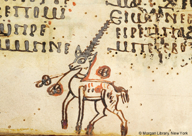

|  |
Coptic Scriptorium |
|
  |
Support for Coptic SCRIPTORIUM has been provided by:
The Coptic SCRIPTORIUM research team includes:
- Rebecca S. Krawiec, Canisius College, editor and encoder/annotator (2013-)
- Christine Luckritz Marquis, editor and encoder/annotator (2014-)
- Elizabeth Platte, Kalamazoo College, editor and encoder/annotator (2013-)
- Bridget Almas, programmer (2014-)
- Gernot Höflechner, programmer (2014-)
- Yanrui Liu, M.A. University of the Pacific; Repository manager (2014-)
- Lauren McDermott, the University of the Pacific student; TEI encoder and HTML programmer (2013-)
- Janet Timbie, the Catholic University of America (2013); editor and annotator
- Alex Dickerson, the University of the Pacific, student; TEI encoder and programmer (2013)
Advisory Board:
- Alain Delattre, Assistant Professor, Department of Languages and Literatures, Université libre de Bruxelles; Papryi.info.
- Eitan Grossman, Assistant Professor, Department of Linguistics and the School of Language Sciences, Hebrew University.
- Robin Imhof, Humanities Librarian and Associate Professor, University Library, the University of the Pacific.
C. Schroeder and A. Zeldes gratefully acknowledge the following individuals and organizations for their contributions to the project:
- The Corpus dei Manoscritti Copti Letterari (Coptic lexicon and other materials)
- Stephen Emmel, University of Münster
- Eric E. Johnson
- Tito Orlandi, Ph.D., Sapienza University, Rome; the University of Hamburg
- The ANNIS team at Humboldt University for providing so many customizations
Partner Projects:
Return to the main Coptic Scriptorium page
Text on this page licensed under the Creative Commons Attribution 3.0 Unported License.

The image on this page is a detail of MS M.0581, fol. 010r at the Pierpont Morgan Library, available at http://corsair.morganlibrary.org/icaimages/5/m581.010ra.jpg, for non-commercial use only.
Page last updated 7 July 2014